Urban Institute R Theme Example Plots
Aaron Williams
Introduction
R is a powerful, open-source programming language and environment. R excels at data management and munging, traditional statistical analysis, machine learning, and reproducible research, but it is probably best known for its graphics. This Bookdown contains examples and instructions for popular and lesser-known plotting techniques in R. Furthermore, it includes instructions on how to leverage the Urban Institute’s ggplot2 theme which will create near-publication-ready plots.
The greatest strength of R is its vibrant and open community of users, developers, and educators. If you ever hit a wall, there are plenty of places to look for help. Hadley Wickham’s book, R for Data Science, is a comprehensive text for beginners. Stackoverflow is full of questions and answers (be sure to include “[r]” in the search). Finally, don’t hesitate to contact Aaron Williams (awilliams@urban.org).
Installation
R can be added on any Urban Institute computer by IT.
R Studio is an Integrated Development Environment that greatly expands the interface and capabilites of R. Loading R Studio is the preferred way of loading R.
R Packages are collections of open-source code developed by R users that contain useful functions and data that expand the power and applicability of R. Packages are regularly added on CRAN and GitHub. Most packages can be installed with install.packages("package name"). This only needs to happen once on each computer for each version of the package. Packages can be loaded using library(package name). This needs to happen at the beginning of each script for each package used. Note: install.packages() uses quotation marks while library() does not.
There are thousands of packages, but most tasks can be accomplished with a handful of important packages:
ggplot2data visualizationdplyrdata managementtidyrdata tidyingreadrdata importpurrrfunctional programmingtibbledata frameshmstimesstringrcharacter stringslubridatedates/times
forcatsfactorsDBIdatabaseshavenSPSS, SAS, and Stata fileshttrweb apisjsonliteJSONreadxl.xls and .xlsxrvestweb scrapingxml2XMLmodelrsimple modeling within a pipelinebroomturning models into tidy datatidyverseloads all of the packages listed up to this point; see Hadley Wichkham’s “tidyverse”shinyinteractive web applications
Using the Urban R Theme
Depending on your operating system, run one of the following scripts once per R session:
Windows
source('https://raw.githubusercontent.com/UrbanInstitute/urban_R_theme/master/urban_theme_windows.R')Mac
source('https://raw.githubusercontent.com/UrbanInstitute/urban_R_theme/master/urban_theme_mac.R')This is an R script that makes ggplot2 output align more closely with the Urban Institute’s Data Visualization style guide.
- This script does not produce publication ready graphics. Visual styles must still be edited using your project/paper’s normal editing workflow.
- Exporting charts as a pdf will allow them to be more easily edited
- You may need to tweak pdf export options to preserve fonts. For example, in RStudio on OSX, check this option in the export pdf window:

The theme has been tested against
ggplot2 version 2.2.0. It will not function properly with older (< 2.0.0) versions ofggplot2- If it is not already installed, please install the free Lato font from Google fonts.
- If you’re on Windows, you’ll first need to install Ghostscript. You may need to have IT enter an admin password for this installation. Then, in R, tell R where your ghostscript file is.
Edit the file path if yours is in a different place
Sys.setenv(R_GSCMD="C:/Program Files/gs/gs9.05/bin/gswin32c.exe")`
Run this script once:
install.packages(c("ggplot2", "reshape2", "RColorBrewer", "extrafont"))
library(extrafont)
font_import()
loadfonts()Loading and importing fonts may take a few minutes.
After the initial installation, to use Lato just load the library in each R session:
library(extrafont)Grammar of Graphics and Conventions
Hadley Wickham’s ggplot2 is based on Leland Wilkinson’s Grammar of Graphics and Wickham’s A Layered Grammar of Graphics. The layered grammar of graphics is a structured way of thinking about the components of a plot, which then lend themselves to the simple structure of ggplot2.
- Data are what are visualizaed in a plot and mappings are directions for how data are mapped in a plot in a way that can be perceived by humans.
- Geoms are representations of the actual data like points, lines, and bars.
- Stats are statistical transformations that represent summaries of the data like histograms.
- Scales map values in the data space to values in the aesthetic space. Scales draw legends and axes.
- Coordinate System describe how geoms are mapped to the plane of the graphic.
- Facettings break the data into meaningful subsets like small multiples.
- Themes control the finer points of a plot such as fonts, font sizes, and background colors.
More information: ggplot2: Elegant Graphics for Data Analysis
Tips and Tricks
ggplot2expects data to be in data frames. It is preferable for the data frames to be “tidy” with each variable as a column, each obseravtion as a row, and each observational unit as a separate table.dplyrandtidyrcontain concise and effective tools for “tidying” data.R allows function arguments to be called explicitly by name and implicitly by position. The coding examples in this guide only contain named arguments for clarity.
Continuous legends should be switched to vertical using
theme(legend.direction = "vertical").Graphics will sometimes render differently on different operating systems. This is because anti-aliasing is activated in R on Mac and Linux but not activated in R on Windows. This blog post outlines several fixes for this problem.
Most features of plots can be adjusted by adding
theme()to the end of a ggplot call. For example, a plot with a continuous legend would look like this:
ggplot(diamonds, aes(carat, price)) +
stat_binhex(aes(colour = ..count..)) +
theme(legend.position = "right",
legend.direction = "vertical")Bar Plots
One Color
ggplot(data = mtcars, mapping = aes(factor(cyl))) +
geom_bar() +
scale_y_continuous(expand = c(0, 0), limits = c(0, 20)) +
labs(title = "Number of Cars By Number of Cylinders",
caption = "Urban Institute",
x = "Number of Cylinders",
y = "Count")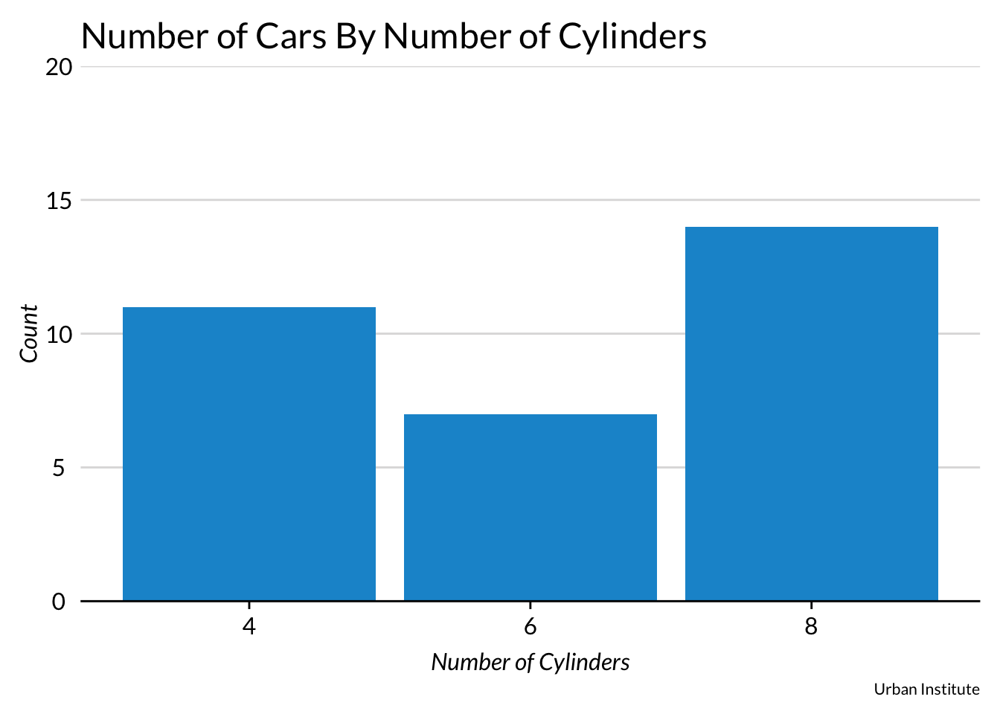
Three Colors
This is identical to the previous plot except colors and a legend are added with fill = factor(cyl). Turning x into a factor with factor(cyl) skips 5 and 7 on the x-axis. Adding fill = cyl without factor() would have created a continuous color scheme and legend.
ggplot(data = mtcars, mapping = aes(x = factor(cyl), fill = factor(cyl))) +
geom_bar() +
scale_y_continuous(expand = c(0, 0)) +
labs(title = "Number of Cars By Number of Cylinders",
caption = "Urban Institute",
x = "Number of Cylinders",
y = "Count"
) 
Stacked Bar Plot
An additional aesthetic can easily be added to bar plots by adding fill = categorical variable to the mapping. Here, diamond quality subsets each bar showing the count of diamonds with each level of clarity.
ggplot(data = diamonds, mapping = aes(x = clarity, fill = cut)) +
geom_bar() +
scale_y_continuous(expand = c(0, 0), limits = c(0, 15000), labels = scales::comma) +
labs(
title = "Diamond Clarity",
subtitle = "Something Informative About Diamonds",
caption = "The Source of Diamond Data",
x = "Clarity",
y = "Count"
)
Stacked Bar Plot With Position = Fill
position = "fill" in geom_bar() changes the y-axis from count to the proportion of each bar.
#5 colors (stacked)
ggplot(data = diamonds, mapping = aes(x = clarity, fill = cut)) +
geom_bar(position = "fill") +
scale_y_continuous(expand = c(0, 0), labels = scales::percent) +
labs(title = "Better Cut Diamonds have Better Clarity",
subtitle = "Share of Diamonds with Different Qualities by Clarity of Cut",
caption = "The Source of Diamond Data",
x = "Clarity",
y = "Count")
Dodged Bar Plot
Subsetted bar charts in ggplot2 are stacked by default. position = "dodge" in geom_bar() expands the bar chart so the bars appear next to each other.
#5 colors (dodged)
ggplot(data = diamonds, mapping = aes(clarity, fill = cut)) +
geom_bar(position = "dodge") +
scale_y_continuous(expand = c(0, 0), limits = c(0, 6000), labels = scales::comma) +
labs(title = "Diamond Clarity",
subtitle = "Something Informative About Diamonds",
caption = "The Source of Diamond Data",
x = "Clarity",
y = "Count")
Scatter Plots
One Color Scatter Plot
Scatter plots are useful for showing relationships between two or more variables.
ggplot(data = diamonds, mapping = aes(x = carat, y = price)) +
geom_point() +
scale_y_continuous(expand = c(0, 0), labels = scales::dollar) +
labs(title = "Diamond Prices Increase With Size",
subtitle = "Diamond Prices in Dollars and Sizes in Carats",
caption = "Urban Institute",
x = "Carat",
y = "Price"
)
High-Density Scatter Plot with Transparency
Large numbers of observations can sometimes make scatter plots tough to interpret because points overlap. Adding alpha = with a number between 0 and 1 adds transparency to points and clarity to plots. Now it’s easy to see that jewelry stores are probably rounding up but not rounding down carats!
ggplot(data = diamonds, mapping = aes(x = carat, y = price)) +
geom_point(alpha = 0.05) +
scale_y_continuous(expand = c(0, 0), labels = scales::dollar) +
labs(title = "Diamond Prices Increase With Size",
subtitle = "Diamond Prices in Dollars and Sizes in Carats",
caption = "Urban Institute",
x = "Carat",
y = "Price"
)
Hex Scatter Plot
Sometimes transparency isn’t enough to bring clarity to a scatter plot with many observations. As n increases into the hundreds of thousands and even millions, geom_hex can be one of the best ways to display relationships between two variables.
ggplot(data = diamonds, mapping = aes(x = carat, y = price)) +
geom_hex(mapping = aes(colour = ..count..)) +
scale_y_continuous(expand = c(0, 0), labels = scales::dollar) +
labs(title = "Title",
subtitle = "geom_hex adds clarity to overlapping points",
x = "Carat",
y = "Price") +
theme(legend.position = "right",
legend.direction = "vertical")
Scatter Plots With Random Noise
Sometimes scatter plots have many overlapping points but a reasonable number of observations. geom_jitter adds a small amount of random noise so points are less likely to overlap. width and height control the amount of noise that is added. In the following before-and-after, notice how many more points are visible after adding jitter.
Before
ggplot(data = mpg, mapping = aes(x = displ, y = cty)) +
geom_point() +
scale_y_continuous(expand = c(0, 0)) +
labs(title = "Displacement and City MPG",
subtitle = "Cars With Less Displacement Generally Get Better City MPG",
caption = "Urban Institute",
x = "Displacement",
y = "City MPG"
)
After
set.seed(2017)
ggplot(data = mpg, mapping = aes(x = displ, y = cty)) +
geom_jitter(width = 0.2, height = 0.2) +
scale_y_continuous(expand = c(0, 0)) +
labs(title = "Displacement and City MPG",
subtitle = "Cars With Less Displacement Generally Get Better City MPG",
caption = "Urban Institute",
x = "Displacement",
y = "City MPG"
)
Scatter Plot with Counts
Another option is to use geom_count() to add a size dimension to overlapping points.
ggplot(data = mpg, mapping = aes(x = displ, y = cty)) +
geom_count() +
scale_y_continuous() +
labs(title = "Displacement and City MPG",
subtitle = "Cars With Less Displacement Generally Get Better City MPG",
caption = "Urban Institute",
x = "Displacement",
y = "City MPG"
)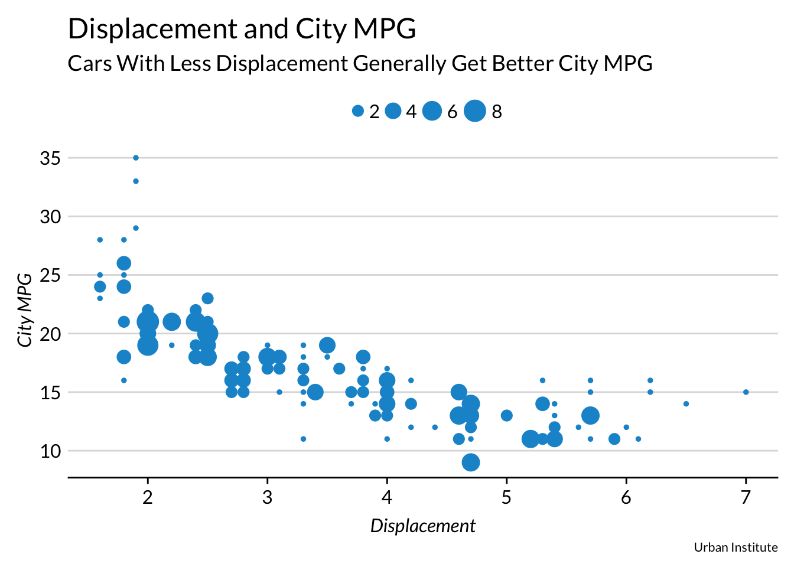
Scatter Plots with Fill
A third aesthetic can be added to scatter plots. Here, color signifies the number of cylinders in each car. Before ggplot() is called, Cylinders is created using library(dplyr) and the piping operator %>%.
mtcars %>%
mutate(Cylinders = factor(cyl)) %>%
ggplot(mapping = aes(x = wt, y = mpg, colour = Cylinders)) +
geom_point(size = 3) +
labs(title = "Fuel Efficiency Declines as Weight Increases",
caption = "Urban Institute",
x = "Weight (Tons)",
y = "Miles Per Gallon") +
theme(legend.title = element_text(hjust = 0))
Bubble Scatter Plot
size = can be used as a mapping to plot a fourth dimension.
mtcars %>%
mutate(Cylinders = factor(cyl), `Automatic Transmission` = factor(am)) %>%
ggplot(mapping = aes(x = wt, y = mpg, color = `Automatic Transmission`, size = Cylinders)) +
geom_point() +
labs(title = "Fuel Efficiency Declines as Weight Increases",
caption = "Urban Institute",
x = "Weight (Tons)",
y = "Miles Per Gallon") +
theme(legend.title = element_text(hjust = 0))
Highlight Points
Label Points
geom_text() and geom_label() annotate points on scatterplots. Both functions need x values, y values, and a vector of labels. It’s rarely useful to label every point. Use filter() to create a second data set that is subsetted and pass it into the labelling function.
geom_text() labels points without backgrounds. geom_label() labels points with backgrounds.
geom_text()
labels <- mtcars %>%
rownames_to_column("model") %>%
filter(gear == 5)
mtcars %>%
ggplot(mapping = aes(x = wt, y = mpg)) +
geom_point() +
geom_text(data = labels, mapping = aes(x = wt, y = mpg, label = model), nudge_x = 0.35) +
labs(title = "Fuel Efficiency Declines as Weight Increases",
caption = "Urban Institute",
x = "Weight (Tons)",
y = "Miles Per Gallon")
geom_label()
labels <- mtcars %>%
rownames_to_column("model") %>%
filter(gear == 5)
mtcars %>%
ggplot(mapping = aes(x = wt, y = mpg)) +
geom_point() +
geom_label(data = labels, mapping = aes(x = wt, y = mpg, label = model), nudge_x = 0.35) +
labs(title = "Fuel Efficiency Declines as Weight Increases",
caption = "Urban Institute",
x = "Weight (Tons)",
y = "Miles Per Gallon")
Line Plots
ggplot(data = economics, mapping = aes(x = date, y = unemploy)) +
geom_line() +
scale_y_continuous(labels = scales::comma) +
labs(title = "Unemployment in the United States",
subtitle = "Number of Unemployed Americans in the U.S.",
caption = "Urban Institute",
x = "Year",
y = "Number Unemployed (1,000s)")
Lines Plots With Multiple Lines
Plotting more than one line can be useful for seeing the relationship of variables over time, but it takes a small amount of data munging.
This is because ggplot2 wants data in a “long” format instead of a “wide” format for line plots with multiple lines. gather() and spread() from the tidyr package make switching back-and-forth between “long” and “wide” painless. Essentially, variable titles go into “key” and variable values go into “value”. Then ggplot2, turns the different levels of the key variable (population, unemployment) into colors.
library(tidyverse)
economics %>%
select(date, pop, unemploy) %>%
gather(pop, unemploy, key = "variable", value = "value") %>%
ggplot(mapping = aes(x = date, y = value, color = variable)) +
geom_line(size = 1) +
scale_y_continuous(expand = c(0, 0), labels = scales::comma) +
labs(title = "Unemployment and Population",
subtitle = "Total Population and Total Unemployment in the U.S. Over Time",
caption = "Urban Institute",
x = "Year",
y = "People (1,000s)")
Binning
Histograms and frequency polygons show the distribution of a single numeric variable. Both bin variables and then count the number of observations in a bin. Histograms display distributions with a bar as a geom and frequency polygons show distributions with the line geom. Frequency polygons can be easily layered.
Histogram
ggplot(data = diamonds, mapping = aes(x = depth)) +
geom_histogram(bins = 100) +
scale_y_continuous(expand = c(0, 0), labels = scales::comma) +
labs(title = "Distribution of Diamond Depths",
caption = "Urban Institute",
x = "Depth",
y = "Count")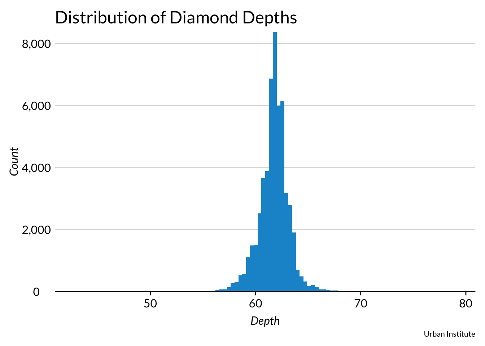
diamonds %>%
filter(cut == "Fair" | cut == "Premium") %>%
ggplot(mapping = aes(x = depth, fill = cut)) +
geom_histogram(bins = 100) +
scale_y_continuous(expand = c(0, 0), labels = scales::comma) +
labs(title = "Distribution of Diamond Depths and Quality",
caption = "Urban Institute",
x = "Depth",
y = "Count")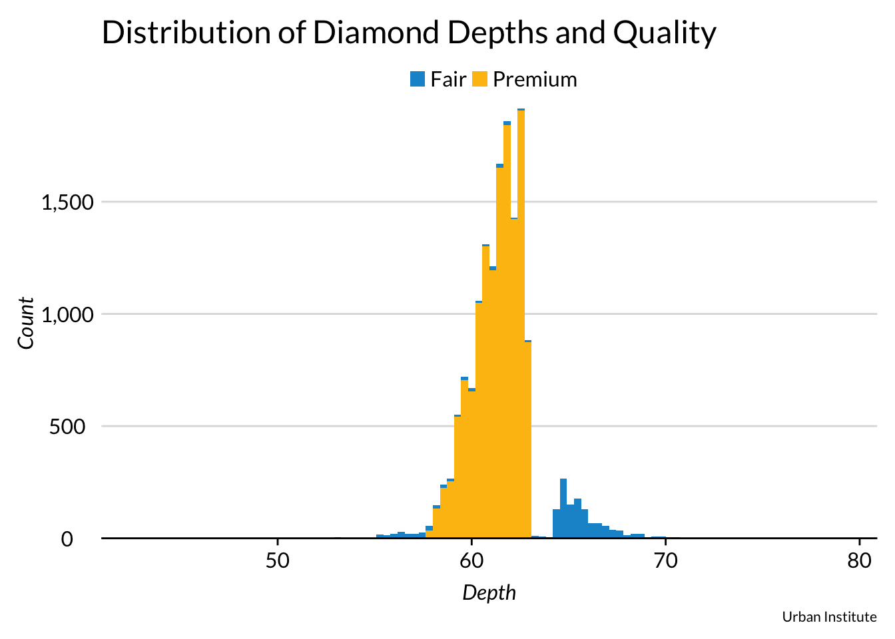
Frequency Polygon
population %>%
filter(year == 2013 & population < 3000000) %>%
ggplot(mapping = aes(x = population)) +
geom_freqpoly() +
scale_y_continuous(expand = c(0, 0)) +
scale_x_continuous(labels = scales::comma) +
labs(title = "Populations of World Countries",
caption = "Urban Institute",
x = "Population",
y = "Count")## `stat_bin()` using `bins = 30`. Pick better value with `binwidth`.
diamonds %>%
filter(cut == "Ideal" | cut == "Premium") %>%
ggplot(aes(x = price, color = cut)) +
geom_freqpoly(size = 1) +
scale_x_continuous(labels = scales::comma) +
scale_y_continuous(labels = scales::dollar) +
labs(title = "Distribution of Diamond Prices and Diamond Cut",
caption = "Urban Institue",
x = "Price",
y = "Count")## `stat_bin()` using `bins = 30`. Pick better value with `binwidth`.
Categorical Variables
The following plots are effective at displaying how a continuous or discrete variable varies across different levels of a categorical variable.
Box Plot
ggplot(InsectSprays, aes(x = spray, y = count)) +
geom_boxplot() +
scale_y_continuous(expand = c(0, 0)) +
labs(title = "Number of Insects Killed by Insect Sprays",
caption = "Urban Institute",
x = "Type of Insect Spray",
y = "Number of Dead Insects")
Violin Plot
ggplot(InsectSprays, aes(x = spray, y = count, fill = spray)) +
geom_violin() +
scale_y_continuous(expand = c(0, 0)) +
labs(title = "Number of Insects Killed by Insect Sprays",
caption = "Urban Institute",
x = "Type of Insect Spray",
y = "Number of Dead Insects")
Bean Plots
TODO(aaron): Add bean plots
Area Plot
Stacked Area
txhousing %>%
filter(city %in% c("Austin","Houston","Dallas","San Antonio","Fort Worth")) %>%
group_by(city, year) %>%
summarize(sales = sum(sales)) %>%
ggplot(aes(x = year, y = sales, fill = city)) +
geom_area(position = "stack") +
scale_y_continuous(expand = c(0, 0), labels = scales::comma) +
labs(title = "Home Sales in Texas Cities",
caption = "Urban Institute",
x = "Year",
y = "Home Sales")
Filled Area
txhousing %>%
filter(city == "Austin" | city == "Houston"| city == "Dallas"| city == "San Antonio" | city == "Fort Worth") %>%
group_by(city, year) %>%
summarize(listings = sum(listings)) %>%
mutate(listings = ifelse(is.na(listings), lag(listings), listings)) %>%
ggplot(aes(x = year, y = listings, fill = city)) +
geom_area(position = "fill") +
scale_y_continuous(expand = c(0, 0), labels = scales::comma) +
labs(title = "Home Listings in Texas Cities",
caption = "Urban Institute",
x = "Year",
y = "Proportion of Home Listings")
Waffle Chart / Square Pie Chart
The waffle package {CRAN and Github} makes creating square pie charts easy. It can also be combined with glpyhs for more elegant shapes than squares. This example uses data pulled from A Vision for an Equitable DC.
Waffle charts will require a little extra tinkering since they are called from library(waffle) instead of library(ggplot2). Most importantly, waffle charts require theme_urban(text = element_text(family = "Lato")) for the Lato font.
Single Waffle Chart
library(waffle)
parts <- c(`Virginia\nClinics` = (1000 - 208 - 105), `Maryland\nClinics` = 208, `D.C.\nClinics` = 105)
waffle(parts, rows = 25, size = 1, colors = c("#1696d2", "#fdbf11", "#000000"), legend_pos = "bottom") +
labs(title = "Free Clinics in the D.C.-Maryland-Virginia Area",
subtitle = "1 Square == 1 Clinic",
caption = "Urban Institute") +
theme(text = element_text(family = "Lato"))
Waffle Charts with Glyphs
Waffle charts can be enhanced by replacing squares qith glyphs. Two important arguments to know are glyph_size = and use_glyph =. Both are called in the waffle() function. Note: size = 1 is sensible and glyph_size = 12 is sensible.
Using glyphs requires downloading fontawesome. That can be done here.Then run library(extrafont), font_import(<font-location>), and loadfonts() once. After that, building waffle charts with glpyhs should be as easy as one function call.
#library(extrafont)
#font_import("H:\\IT\\urban_R_theme\\docs")
#loadfonts()
parts <- c(`Virginia\nClinics` = (50 - 10 - 5), `Maryland\nClinics` = 10, `D.C.\nClinics` = 5)
waffle(parts, rows = 5, glyph_size = 12, colors = c("#1696d2", "#fdbf11", "#000000"), legend_pos = "bottom", use_glyph = "medkit") +
labs(title = "Free Clinics in the D.C.-Maryland-Virginia Area",
subtitle = "1 Square == 20 Clinics",
caption = "Urban Institute") +
theme(text = element_text(family = "Lato"))
Multiple Waffle Charts
library(waffle) allows multiple waffle charts to be ironed together using iron(). Ironing multiple charts together requires some trial-and-error to get the sizes and resolution to look good, but the results can be worth the work. Don’t forget theme(text = element_text(family = "Lato"))!
library(waffle)
white <- c(`With Degree` = 169300, `Without Degree` = 800)
black <- c(`With Degree` = 174900, `Without Degree` = 34700)
hispanic <- c(`With Degree` = 27700, `Without Degree` = 12400)
iron(
waffle(white / 83, rows = 40, size = 0.25, colors = c("#1696d2", "#fdbf11"), title = "White", keep = FALSE, pad = 10) +
theme(text = element_text(family = "Lato")),
waffle(black / 83, rows = 40, size = 0.25, colors = c("#1696d2", "#fdbf11"), title = "Black", keep = FALSE) +
theme(text = element_text(family = "Lato")),
waffle(hispanic / 83, rows = 40, size = 0.25, colors = c("#1696d2", "#fdbf11"), title = "Hispanic", keep = FALSE, pad = 59, xlab = "1 Square == 83 People") +
theme(text = element_text(family = "Lato"))
) 
Dot Maps
R can function as a geographical information system (GIS) using library(ggmap). ggmap uses Google Maps, OpenStreetMap, Stamen Maps to create mappings (Grammar of Graphics) of maps (colloquial). Data with longitudes and latitudes can then be charted using many ggplot2 geoms.
ggmap creates several different map types: * terrain - A combination of major roads, cities names, state borders, and a terrain map. * terrain-background - * satellite - A satellite image of the specified area with no labels. * roadmap - A Google roadmap * hybrid - A satellite image with state boarders and major cities. * watercolor - A bizarre sand-colored map with roads and water. * toner - A clean black-and-white map where land is white and water is black.
Set the map type with maptype = "".
NOTE: If ggmap returns ggmap Error: GeomRasterAnn was built with an incompatible version of ggproto then reinstall the package using install.packages("ggmap", type = "source").
States
Terrain
library(zipcode)
library(tidyverse)
library(ggmap)
data(zipcode)
zipcode <- as_tibble(zipcode)
colorado <- zipcode %>%
filter(state == "CO")
ggmap(get_map(location = "colorado", zoom = 6, maptype = "terrain")) +
scale_x_continuous(limits = c(-109, -102)) +
scale_y_continuous(limits = c(37, 41)) +
theme(axis.text = element_blank(),
axis.line = element_blank(),
axis.ticks = element_blank()) +
geom_point(data = colorado, aes(x = longitude, y = latitude), size = 1.5, alpha = 0.5) +
labs(title = "Zip Codes in Colorado",
x = NULL,
y = NULL)
Toner
library(zipcode)
library(tidyverse)
library(ggmap)
data(zipcode)
zipcode <- as_tibble(zipcode)
colorado <- zipcode %>%
filter(state == "CO")
ggmap(get_map(location = "colorado", zoom = 6, maptype = "toner", source = "stamen")) +
scale_x_continuous(limits = c(-109, -102)) +
scale_y_continuous(limits = c(37, 41)) +
theme(axis.text = element_blank(),
axis.line = element_blank(),
axis.ticks = element_blank()) +
geom_point(data = colorado, aes(x = longitude, y = latitude), size = 1.5, alpha = 0.5) +
labs(title = "Zip Codes in Colorado",
x = NULL,
y = NULL)
Hybrid
library(zipcode)
library(tidyverse)
library(ggmap)
data(zipcode)
zipcode <- as_tibble(zipcode)
colorado <- zipcode %>%
filter(state == "CO")
ggmap(get_map(location = "colorado", zoom = 6, maptype = "hybrid")) +
scale_x_continuous(limits = c(-109, -102)) +
scale_y_continuous(limits = c(37, 41)) +
theme(axis.text = element_blank(),
axis.line = element_blank(),
axis.ticks = element_blank()) +
geom_point(data = colorado, aes(x = longitude, y = latitude), size = 1.5, alpha = 0.5) +
labs(title = "Zip Codes in Colorado",
x = NULL,
y = NULL)
Localities
newyork <- zipcode %>%
filter(state == "NY")
ggmap(get_map(location = "new york city", zoom = 11, maptype = "satellite")) +
geom_point(data = newyork, aes(x = longitude, y = latitude), size = 2, alpha = 0.5) +
labs(title = "Zip Codes in New York, NY",
x = NULL,
y = NULL) +
theme(axis.text = element_blank(),
axis.line = element_blank(),
axis.ticks = element_blank())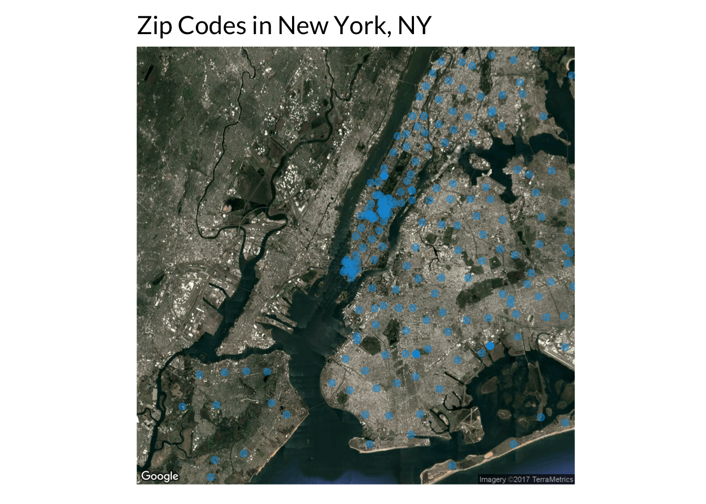
Choropleth
Choropleths are maps with regions shaded based on variables. It is simple to build choropleths in R for states and counties.
Choropleths require some data management because state or county level data need to be joined to the vector boundaries. Additionally, extra edits need to be made in theme() but those changes can just be copied-and-pasted from the examples.
For a more thorough explanation, read pages 55-61 of Hadley Wickham’s ggplot2: Elegant Graphics for Data Analysis. Please contact Aaron at awilliams@urban.org if you want to borrow a copy.
States
Be sure to add scale_fill_gradient() with low = and high = to ensure that continuous variables are clearly displayed from low to high.
library(fivethirtyeight)
# Create data frame with vector boundaries
states <- map_data("state") %>%
select(lon = long, lat, group, state = region)
# Create data frame with state driving data
drivers.usa <- bad_drivers %>%
mutate(state = tolower(state))
# Join the vector boundaries and state data
drivers.states <- left_join(states, drivers.usa, by = c("state" = "state"))
# Plot!
ggplot(drivers.states, aes(lon, lat, group = state)) +
geom_polygon(aes(fill = perc_speeding)) +
scale_fill_gradient(low = "#CEE8F3",
high = "#094C6B") +
coord_quickmap() +
labs(title = "Percentage of Fatal Collisions Involving Speeding",
subtitle = "Share of fatal collisions per billion miles, 2009",
caption = "Source: fivethirtyeight R package") +
theme(axis.text = element_blank(),
axis.ticks = element_blank(),
axis.title = element_blank(),
panel.grid = element_blank(),
axis.line = element_blank(),
legend.position = "right",
legend.direction = "vertical")
Counties
library(USAboundaries)
# Create data frame with vector boundaries
indiana.counties <- map_data("county", "indiana") %>%
select(lon = long, lat, group, id = subregion)
# Create data frame with population data
indiana.census <- midwest %>%
tbl_df() %>%
filter(state == "IN") %>%
mutate(county = tolower(county)) %>%
select(county, area, poptotal, percwhite, percblack)
# Join the vector boundaries and county data
census.counties <- left_join(indiana.census, indiana.counties, by = c("county" = "id"))
# Plot
ggplot(census.counties, aes(lon, lat, group = county)) +
geom_polygon(aes(fill = poptotal)) +
scale_fill_gradient(low = "#CEE8F3",
high = "#094C6B") +
coord_quickmap() +
theme(axis.text = element_blank(),
axis.ticks = element_blank(),
axis.title = element_blank(),
panel.grid = element_blank(),
axis.line = element_blank(),
legend.position = "right",
legend.direction = "vertical") +
labs(title = "Population in Indiana Counties",
caption = "Urban Institute")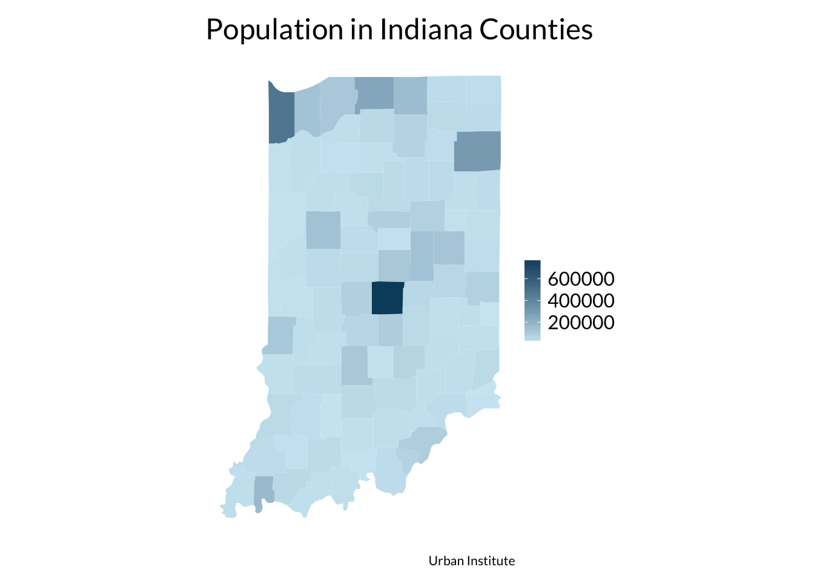
Texas sales
library(USAboundaries)
# Create data frame with vector boundaries
texas.counties <- map_data("county", "texas") %>%
select(lon = long, lat, group, id = subregion)
# Create data frame with hosuing data
texas.sales <- txhousing %>%
filter(year == 2014) %>%
select(city, sales) %>%
mutate(city = tolower(city)) %>%
group_by(city) %>%
summarize(sales = sum(sales))
# Join the vector boundaries and state data
census.counties <- left_join(texas.counties, texas.sales, by = c("id" = "city"))
#Plot
ggplot(census.counties, aes(lon, lat, group = id)) +
geom_polygon(aes(fill = sales)) +
coord_quickmap() +
theme(axis.text = element_blank(),
axis.ticks = element_blank(),
axis.title = element_blank(),
panel.grid = element_blank(),
axis.line = element_blank(),
legend.position = "right",
legend.direction = "vertical") +
labs(title = "Home Sales in Select Texas Counties",
caption = "Urban Institute")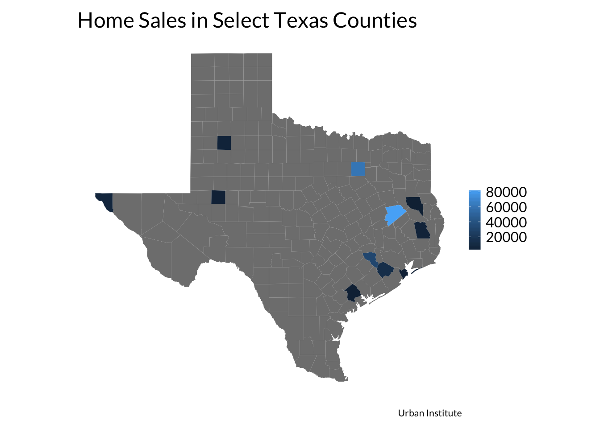
Heat map
bad_drivers %>%
mutate(`Number of Drivers` = scale(num_drivers),
`Percent Speeding` = scale(perc_speeding),
`Percent Alcohol` = scale(perc_alcohol),
`Percent Not Distracted` = scale(perc_not_distracted),
`Percent No Previous` = scale(perc_no_previous),
state = factor(state, levels = rev(state))
) %>%
select(-insurance_premiums, -losses, -(num_drivers:losses)) %>%
gather(`Number of Drivers`:`Percent No Previous`, key = "variable", value = "SD's from Mean") %>%
ggplot(aes(variable, state)) +
geom_tile(aes(fill = `SD's from Mean`)) +
labs(title = "Drivers Involved in Fatal Collisions By Behavior",
subtitle = "As a share of scaled fatal collisions per billion miles, 2009",
caption = "Source: fivethirtyeight R package",
x = NULL,
y = NULL) +
scale_fill_gradient(low = "white", high = "#1696d2") +
theme(legend.position = "right",
legend.direction = "vertical",
axis.text.x = element_text(angle = 45))
#https://learnr.wordpress.com/2010/01/26/ggplot2-quick-heatmap-plotting/Facetting
##Facet Grid
ggplot(mtcars, aes(mpg, wt)) +
geom_point() +
ggtitle("Title") +
facet_grid(vs ~ am, margins = TRUE)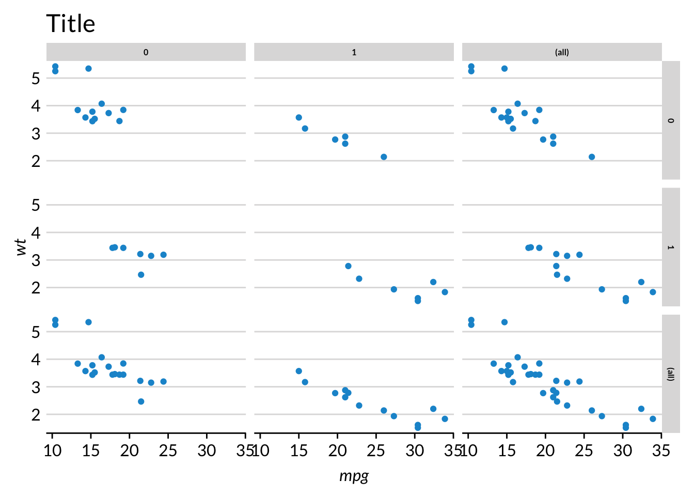
Small Multiples
R’s facetting system is a powerful way to make “small multiples”.
Some edits to the theme may be necessary depending upon how many rows and columns are in the plot.
# Facet Wrap
txhousing %>%
filter(city != "Brazoria County" & city != "Brownsville" & city != "San Angelo" & city != "Denton County") %>%
ggplot(aes(x = median)) +
geom_histogram() +
facet_wrap(~city) +
scale_x_continuous(labels = scales::dollar) +
scale_y_continuous(expand = c(0, 0)) +
labs(title = "Median Monthly Home Prices in Selected Texas Cities",
x = "Median Monthly Home Value",
y = "Count") +
theme(axis.text.x = element_text(angle = 90),
strip.text = element_text(face = "plain",
size = rel(0.5)))
# Facet gridSmoothers
geom_smooth() fits and plots models to data with two or more dimensions.
ggplot(data = mpg) +
geom_smooth(mapping = aes(x = displ, y = hwy))## `geom_smooth()` using method = 'loess'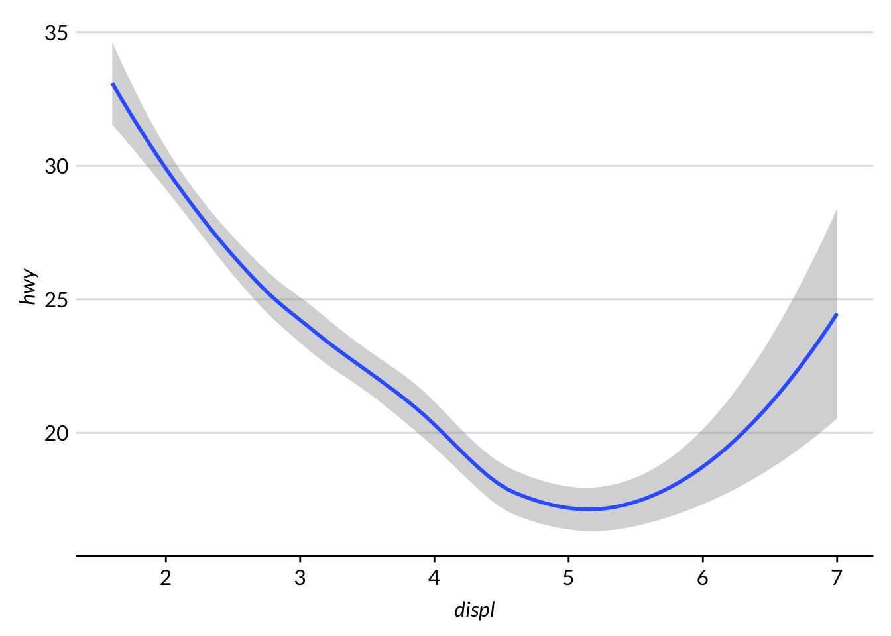
Understanding and manipulating defaults is more important for geom_smooth() than other geoms because it contains a number of assumptions. geom_smooth() automatically uses loess for datasets with fewer than 1,000 observations and a generalized additive model with formula = y ~ s(x, bs = "cs") for datasets with greater than 1,000 observations. Both default to a 95% confidence interval with the confidence interval displayed.
Models are chosen with method = and can be set to lm(), glm(), gam(), loess(), rlm(), and more. Formulas can be specified with formula = and y ~ x syntax. Plotting the standard error is toggled with se = TRUE and se = FALSE, and level is specificed with level =. As always, more information can be seen in RStudio with ?geom_smooth().
geom_point() adds a scatterplot to geom_smooth(). The order of the function calls is important. The function called second will be layed on top of the function called first.
ggplot(data = diamonds, mapping = aes(x = carat, y = price)) +
geom_point(alpha = 0.1) +
geom_smooth(color = "red") +
scale_y_continuous(expand = c(0, 0), labels = scales::dollar)## `geom_smooth()` using method = 'gam'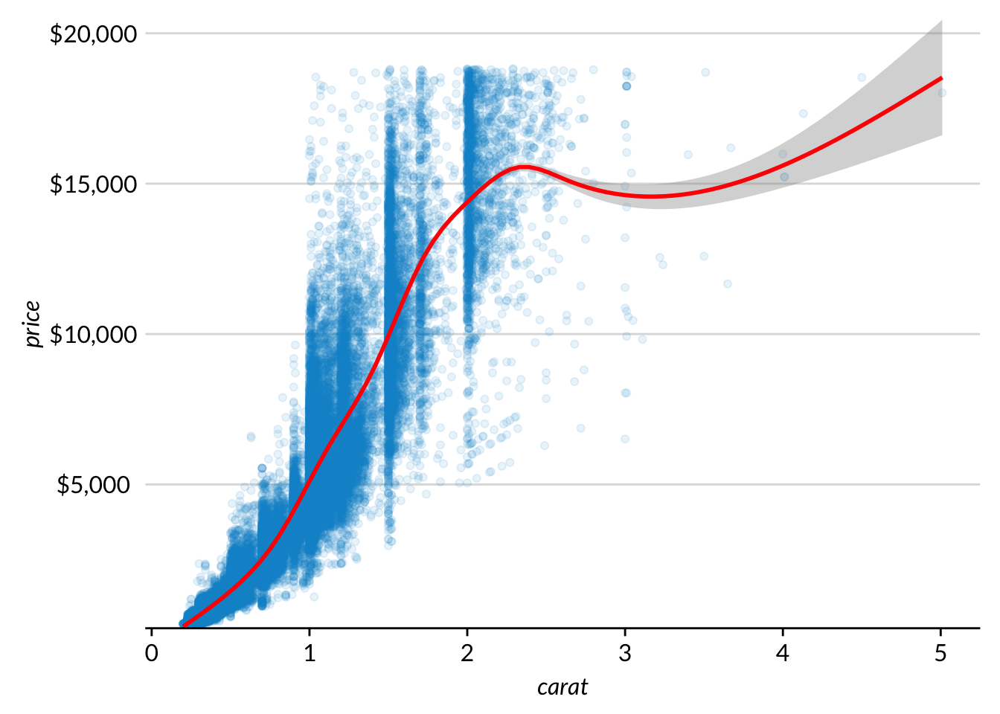
geom_smooth can be subset by categorical and factor variables. This requires subgroups to have a decent number of observations and and a fair amount of variability across the x-axis. Confidence intervals often widen at the ends so special care is needed for the chart to be meaningful and readable.
ggplot(data = mpg, mapping = aes(x = displ, y = hwy, color = factor(cyl))) +
geom_point(alpha = 0.2) +
geom_smooth() +
labs(title = "Engine Displacement and City MPG by Number of Cylinders",
subtitle = "Loess: MPG = Displacement",
caption = "Urban Institute",
x = "Engine Displacement",
y = "Highway MPG")## `geom_smooth()` using method = 'loess'
ggplot(data = mpg, mapping = aes(x = displ, y = hwy, color = drv)) +
geom_smooth(method = "lm") +
geom_point(alpha = 0.2) +
labs(title = "Engine Displacement and City MPG by Drive",
subtitle = "Linear Model: MPG = Displacement",
caption = "Urban Institute",
x = "Engine Displacement",
y = "Highway MPG")
Layered Geoms
Geoms can be layered in ggplot2. This is useful for design and analysis.
It is often useful to add points to line plots with a small number of values across the x-axis. This example from R for Data Science shows how changing the line to grey can be appealing.
Design
Before
table1 %>%
ggplot(aes(x = year, y = cases)) +
geom_line(aes(color = country)) +
geom_point(aes(color = country)) +
scale_y_continuous(labels = scales::comma) +
scale_x_continuous(breaks = c(1999, 2000)) +
labs(title = "Changes in Tuberculosis Cases in Three Countries",
caption = "Source: World Health Organization Global Tuberculosis Report")
After
table1 %>%
ggplot(aes(year, cases)) +
geom_line(aes(group = country), color = "grey50") +
geom_point(aes(color = country)) +
scale_y_continuous(labels = scales::comma) +
scale_x_continuous(breaks = c(1999, 2000)) +
labs(title = "Changes in Tuberculosis Cases in Three Countries",
caption = "Source: World Health Organization Global Tuberculosis Report")
Layering geoms is also useful for adding trend lines and centroids to scatter plots.
# Simple line
# Regression model
# CentroidsCentroids
mpg_summary <- mpg %>%
group_by(cyl) %>%
summarize(displ = mean(displ), cty = mean(cty))
mpg %>%
ggplot() +
geom_point(aes(x = displ, y = cty, color = factor(cyl)), alpha = 0.5) +
geom_point(data = mpg_summary, aes(x = displ, y = cty), size = 5, color = "red") +
geom_text(data = mpg_summary, aes(x = displ, y = cty, label = cyl)) +
labs(title = "City MPG, Engine Displacement, and Number of Cylinders",
subtitle = "Subgroup Means in Red",
caption = "Source: EPA Fuel Economy Dataset",
x = "Displacement",
y = "City MPG")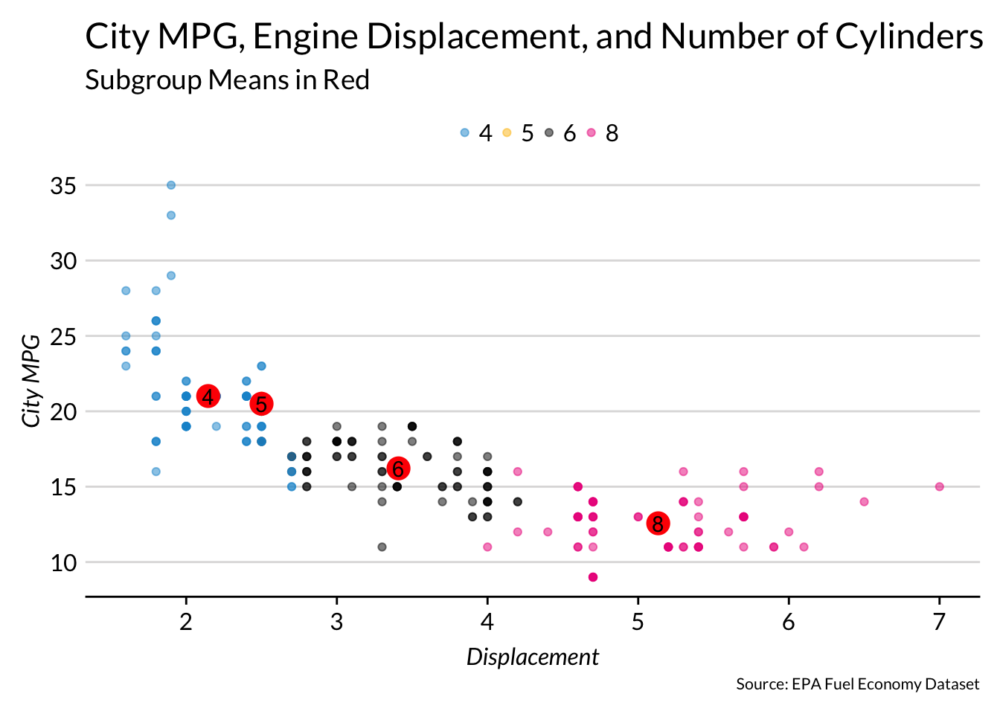
Shiny
ggvis
ggvis is Hadley Wickham’s successor to ggplot2. It incorporates what he has learned over the past decade and extends to include web and interactive graphics. The package is available, but it is still very much in development. ggplot2 is still the best way to make graphics in R.
Functionality that is added to ggvis that isn’t possible in ggplot will be added to this section in the future.
Text
Appendix
System Info and Package Versioning
sessionInfo()## R version 3.3.2 (2016-10-31)
## Platform: x86_64-apple-darwin13.4.0 (64-bit)
## Running under: macOS Sierra 10.12.5
##
## locale:
## [1] en_US.UTF-8/en_US.UTF-8/en_US.UTF-8/C/en_US.UTF-8/en_US.UTF-8
##
## attached base packages:
## [1] grid stats graphics grDevices utils datasets methods
## [8] base
##
## other attached packages:
## [1] USAboundaries_0.2.0 maps_3.2.0 fivethirtyeight_0.2.0
## [4] ggmap_2.6.1 zipcode_1.0 waffle_0.7.0
## [7] bindrcpp_0.2 hexbin_1.27.1 extrafont_0.17
## [10] RColorBrewer_1.1-2 dplyr_0.7.0 purrr_0.2.2.2
## [13] readr_1.1.1 tidyr_0.6.3 tibble_1.3.3
## [16] ggplot2_2.2.1 tidyverse_1.1.1
##
## loaded via a namespace (and not attached):
## [1] Rcpp_0.12.11 lubridate_1.6.0 lattice_0.20-35
## [4] png_0.1-7 assertthat_0.2.0 rprojroot_1.2
## [7] digest_0.6.12 psych_1.7.5 R6_2.2.2
## [10] cellranger_1.1.0 plyr_1.8.4 backports_1.1.0
## [13] evaluate_0.10 httr_1.2.1 RgoogleMaps_1.4.1
## [16] rlang_0.1.1 lazyeval_0.2.0 readxl_1.0.0
## [19] geosphere_1.5-5 extrafontdb_1.0 Matrix_1.2-10
## [22] rmarkdown_1.6 proto_1.0.0 labeling_0.3
## [25] stringr_1.2.0 foreign_0.8-69 munsell_0.4.3
## [28] broom_0.4.2 modelr_0.1.0 pkgconfig_2.0.1
## [31] mnormt_1.5-5 mgcv_1.8-17 htmltools_0.3.6
## [34] gridExtra_2.2.1 nlme_3.1-131 jsonlite_1.5
## [37] Rttf2pt1_1.3.4 gtable_0.2.0 magrittr_1.5
## [40] scales_0.4.1 stringi_1.1.5 mapproj_1.2-5
## [43] reshape2_1.4.2 sp_1.2-4 xml2_1.1.1
## [46] rjson_0.2.15 tools_3.3.2 forcats_0.2.0
## [49] glue_1.1.1 hms_0.3 jpeg_0.1-8
## [52] parallel_3.3.2 yaml_2.1.14 colorspace_1.3-2
## [55] rvest_0.3.2 knitr_1.16 bindr_0.1
## [58] haven_1.0.0